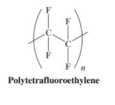
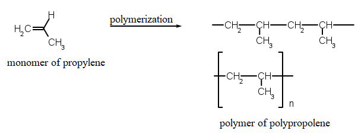

| Name of Microplastic | Production | Degradation |
|---|---|---|

|
With DMT: First step: C6H4(CO2CH3)2 + 2 HOCH2CH2OH → C6H4(CO2CH2CH2OH)2 + 2 CH3OH Second step: n C6H4(Csub>2CH2CH2OH)2 → [(CO)C6H4(CO2CH2CH2O)]n + n HOCH2CH2OH With Terephthalic Acid:Conducted directly at moderate pressure (2.7–5.5 bar) and high temperature (220–260 °C). Water is eliminated in the reaction, and is also continuously removed by distillation Reaction: n C6H4(CO2H)2 + n HOCH2CH2OH → [(CO)C6H4(CO2CH2CH2O)]n + 2n H2O |
The main degradations that can occur are hydrolytic, and probably most importantly, thermal oxidation. Degradation results in discoloration, chain scissions resulting in reduced molecular weight, formation of acetaldehyde, and cross-links. At least one species of bacterium in the genus Nocardia can degrade PET with an esterase enzyme. Japanese scientists have isolated a bacterium Ideonella sakaiensis that possesses two enzymes which can break down the PET into smaller pieces that it can digest. |

|
Polymerization: The C-C pi bond of the vinyl group of a styrene monomer is broken and a new single sigma bond is formed to the carbon of another styrene monomer, as shown in the image. 
|
Polystyrene is chemically very inert, being resistant to acids and bases but is easily dissolved by many chlorinated solvents, and many aromatic hydrocarbon solvents. It is attacked by many organic solvents, which dissolve the polymer. Although polystyrene is generally considered to be non-biodegradable, certain organisms have been shown to digest it. Some methanogens and mealworms can digest polystyrene. |

|
Polyvinyl chloride is produced by polymerization of the vinyl chloride monomer (VCM), as shown in the picture. The polymerization of VCM is started by compounds called initiators that are mixed into the droplets. Typical initiators include dioctanoyl peroxide and dicetyl peroxydicarbonate After the reaction is done, the resulting PVC slurry is degassed and stripped to remove excess VCM, which is recycled. The polymer is then passed through a centrifuge to remove water. The slurry is further dried in a hot air bed, and the resulting powder is sieved. |
Weathering degradation of plastics results in their surface embrittlement and microcracking, yielding microparticles that continue on in the environment. These particles act like sponges and soak up persistent organic pollutants (POPs) around them. Thus laden with high levels of POPs, the microparticles are often ingested by organisms in the biosphere. The fungus Aspergillus fumigatus effectively degrades plasticized PVC. Phanerochaete chrysosporium was grown on PVC in a mineral salt agar. Phanerochaete chrysosporium, Lentinus tigrinus, Aspergillus niger, and Aspergillus sydowii can effectively degrade PVC. |
|  |
Tetrafluoroethylene is produced by free-radical polymerization of tetrafluoroethylene. The net equation is: n F2C=CF2 → −(F2C−CF2)n− |
Because tetrafluoroethylene can explosively decompose to tetrafluoromethane and carbon, special apparatus is required for the polymerization to prevent hot spots that might initiate this dangerous side reaction. The process is typically initiated with persulfate, which homolyzes to generate sulfate radicals: [O3SO−OSO3]2− ⇌ 2 SO4− |

|
Vinylidene chloride (CH2=CCl2) is obtained from trichloroethane (CH2=CHCl3) through the removal of hydrogen chloride of that compound by alkali treatment. For processing into PVDC, the liquid is suspended in water as fine droplets or treated with soaplike surfactants and dispersed in water as an emulsion of small particles. Under the action of free-radical initiators, the vinylidene-chloride monomers (small, single-unit molecules) are linked together to form large, multiple-unit polymers. The polymer is obtained from the water phase as dry powder or beads, which can be melted for extrusion into plastic film. |
At 125 °C, PVDC decomposes to hydrochloric acid. If the resin reaches high temperatures 200 °C, it will degrade, evolving hydrogen chloride gas (hydrochloric acid) at concentrations that may cause eye, skin, and respiratory irritation and/or injury. Such degradation limits its use in extrusion equipment that is not especially designed and fabricated for PVDV use. Hydrogen chloride gas evolving from PVDC-containing packaging incinerated in energy-from-waste facilities has also discouraged its use in the industry. |
|
|
Polypropylene is produced by the chain-growth polymerization of propene as shown  |
Polypropylene is liable to chain degradation from exposure to temperatures above 100 °C. Oxidation usually occurs at the tertiary carbon centers leading to chain breaking via reaction with oxygen. Microbial communities isolated from soil samples mixed with starch have been shown to be capable of degrading polypropylene. Polypropylene has been reported to degrade while in human body as implantable mesh devices. The degraded material forms a tree bark-like layer at the surface of mesh fibers. |